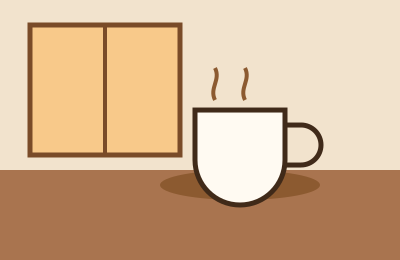

Selamat datang
Kedai Kopi Senja buka sejak 2019 di Jalan Diponegoro. Kami menyeduh kopi arabika dari Temanggung dan memanggang bijinya sendiri tiap dua minggu. Selain kopi, ada juga matcha dan cokelat panas untuk yang tidak minum kopi.

Tempatnya cukup luas, ada colokan di tiap meja dan Wi-Fi gratis. Cocok untuk mengerjakan tugas sore hari.
Jam buka
- Senin sampai Jumat: 08.00 - 22.00 WIB
- Sabtu: 09.00 - 23.00 WIB
- Minggu: 09.00 - 21.00 WIB